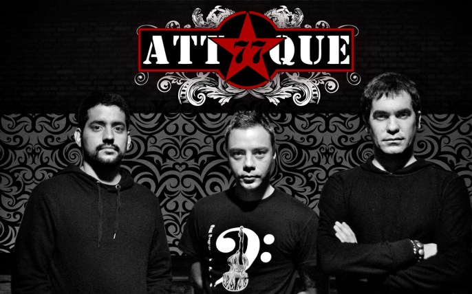

Imagen de la banda con sus 3 integrantes.

Banda de punk rock argentina formada en la ciudad de Buenos Aires en 1987, es un trío actualmente integrado por Mariano Gabriel Martínez, Luciano Scaglione y Leonardo De Cecco. Varios de sus álbumes obtuvieron certificaciones de oro y platino. Sus canciones «Ángeles caídos» y «Hacelo por mí» han sido consideradas la n.º 97 y n.º 19 respectivamente entre las cien mejores canciones del rock argentino según el sitio web Rock.com.ar.
| Año | Album |
| 1989 | Dulce Navidad |
| 1990 | El cielo puede esperar |
| 1992 | Angeles caídos |
| 1994 | Todo está al revés |
| 1995 | Amen! |
| 1997 | Un día perfecto |
| 1998 | Otras canciones |
| 2000 | Radio Insomnio |
| 2003 | Antihumano |
| 2007 | Karmagedon |
| 2009 | Estallar |
| 2014 | Nuevas versiones |
| 2019 | Triángulo de Fuerza |